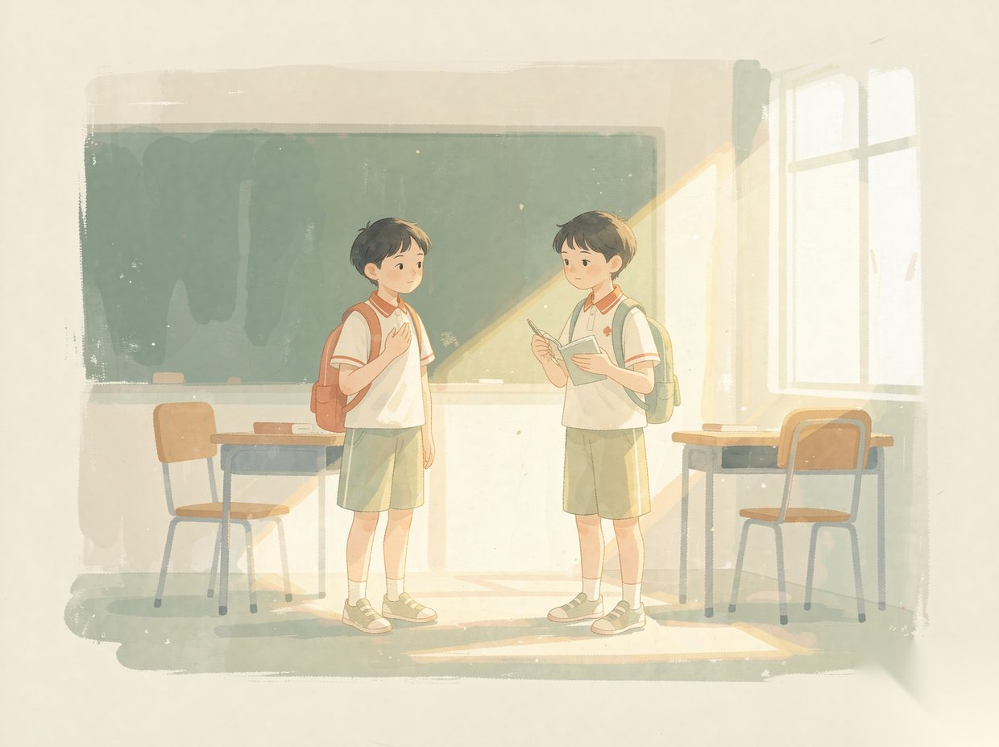

人不学，不知义
上一句用璞玉告诉我们：玉石要打磨，才能成为合用的器物。这一句，落到我们自己身上。
人如果不肯修习、不肯用心体会，就不容易明白什么是合宜的正道。
先把一个误解挪开：这句话不是说，人不学，本性就坏了。
本心的良知，就像玉里本有的温润。可习气、情绪、私欲，像尘土一层层盖在上面。不去学习、不去对照反思，人就容易被眼前的好恶牵着走，分不清怎么做才恰当。

学习知义，也不是背一大堆规矩来束缚自己。
知义，是慢慢懂得：什么该做，什么不该做；什么时候向前，什么时候退让；善待他人，也守住自己的边界。

雕琢是外缘，而学，是我们自己主动去擦亮本心的过程。稳定的教化，提供打磨的条件；要不要去领会、去自省，主动权在自己。
这也呼应前面：玉要打磨，人要自省，两件事都需要长久坚持。
跟着情绪、喜好走，遇事没有分寸；善恶模糊，全凭一时感受判断。
经由学习与自省，良知显发，取舍有根基；懂得合宜进退，待人有度、守己有界。
- 学习，是帮我们擦亮心里的那把标尺。
- 知义不是死板，是懂得分寸，待人处事刚刚好。
- 玉要打磨，人要自省，两件事都需要长久坚持。
- 道理听懂了，还要在日常里试着去做，才是真的学。
这一句最容易被教成一张对错清单。三条提示，先守住分寸。
一、义是「合宜」，不是绝对的标准答案。同样一件事，场景不同，分寸也会变。重点教思考的方式，而不是死记对错。
二、承接教与学的二分。你提供稳定专一的教化（琢），但知义要孩子经由自主学习、自省才能内化，不能强行灌输。
三、示范优先。家长自己处事有分寸，就是最好的「义」的样板。
接上选择力练习：义是内在的参照标尺。标尺之内，依然保有自主选择的空间；选择之后，也可以复盘调整。
人不学，不知义
一 · 字义与句读义，《说文》「己之威仪也」，经典训「宜」，谓行事合当。全句承上联而下：玉不琢，不成器；人不学，不知义。
出处：《礼记·学记》原文正是这一联，《三字经》直接撷取。玉为喻，人为实；琢为外缘，学为内修。句读两顿三字，与上句对称。
二 · 命题考辨勘误重点：并非「不学则无善性」。良知本有，但良知易被习气遮蔽。不学，是缺少反照、参照、辨析的功夫，所以不能显发，难以在事中抉择合宜之道。
再分判：琢来自良工（施教），学发于自身（受教）。这一联刚好收束教化的内外两端：外缘打磨，内主修习。
串起整条脉络：稳定的教化（教之专）提供雕琢的条件，学习者主动向学，方能知义。
三 · 中西对照孟子：「是非之心，智之端也。」是非本有，需学思护持显发，与「不学不知义」同内核。
亚里士多德：德性非天生，在持续实践与省察中养成；德性即习惯的稳定化。
认知心理学：直觉判断易受偏见裹挟；学习反思，是建立二阶觉察，校正本能好恶。
反向思辨：书本之学也可能学到僵化教条，反而背离「宜」的本义。学贵在活观，不在记诵。
四 · 与前后课的张力这一联是整套教化链条的小收束：苟不教 → 教之道，贵以专（建立稳定外缘）→ 教不严、子不学（施受双方的本分）→ 玉不琢、人不学（外缘打磨与内修显发）。
与第六课呼应：窦燕山「有义方」，是施教者本身立身合义；本课「知义」，是学习者经由修习，内在生发出义的抉择能力。一为施教之本，一为学成之果。
与第一课联动：良知、独立意志，都在「学」的过程里舒展；不学，天赋无从落地。
一、有的人读书很少，但行事宽厚有度，算不算「知义」？知的边界是书本，还是践行？
二、博学多闻却行事刻薄失度，问题出在哪个环节？是学的方法，还是学的动机？
三、「义」的标准会随时代变化吗？如何守住底层，又不僵化为教条？